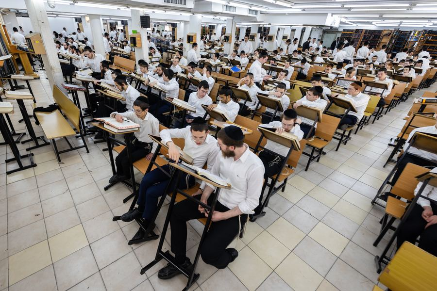

הישיבה הגדולה בעולם
עשרות ישיבות וכוללים, אלפי תלמידים ומיליוני שעות לימוד בכל חודש, ברשת אחת שייסד מרן הרב שטיינמן זצ״ל.
בית אחד של תורה, בכל רחבי הארץ
וְהָגִיתָ בּוֹ יוֹמָם וָלַיְלָהיהושע א, ח
בחודש סיון תשנ״ח ייסד מרן הרב אהרן יהודה לייב שטיינמן זצ״ל את ישיבת ארחות תורה בבני ברק. מאז צמחה הישיבה לרשת שלמה: ישיבות גדולות, ישיבות לצעירים וכעשרים כוללי אברכים.
כל מוסד הוא בית בפני עצמו, וכולם יחד נושאים דרך אחת. בחור יכול לגדול ברשת משנותיו הראשונות בישיבה ועד שנותיו בכולל, בלי לצאת מהבית שמרן הקים.
למסע חייו של מרן ←
הדרך שהתווה מרן
מרן ביקש בית שבו כל בחור יכול לגדול בתורה בשקט, בענווה ולשם שמים.
על פי הוראתו, ושלא כמקובל, השיעורים לא פוצלו לשנים, כדי למנוע תחרות בין התלמידים.
בישיבות הרשת נשמרים ועדים קטנים מהמקובל, על פי הוראת מרן, כדי שכל בחור יזכה ליחס אישי.
מרן לימד שעיקר החינוך הוא בדוגמה אישית, והתנגד להרחקת תלמידים ממוסדות לימוד.
בית אחד, לכל הדרך

ישיבה גדולה
שנות העיון והעמל, בהיכלים הגדולים של הרשת.
הרשת במספרים
מהגליל ועד הנגב
- כרמיאל
- בני ברק
- אלעד
- ירושלים
- מושב עוצם
כוללי הרשת נוספים ברחבי הארץ. לרשימה המלאה ←
הנהגת הרשת
החזיקו את לימוד התורה
עֵץ חַיִּים הִיא לַמַּחֲזִיקִים בָּהּמשלי ג, יח
כל החזקה היא בכל הרשת כולה: שעה אחת שלכם היא שעה של 4,500 בחורים הלומדים יחד.